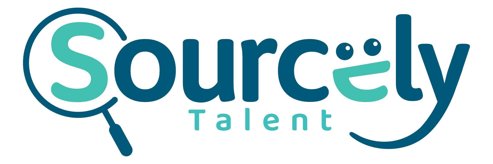

Mockups · Wordmark above the rail
Four ways to seat the wordmark above the floating nav
Each card shows the top of the page with the wordmark placed above the rail, in a different size and alignment.
Option 1 · Bold
Large + centered above rail
Full wordmark at hero scale, centered. Rail tucks in just below. Reads like a magazine masthead — confident, but takes up the most vertical space.

nyc · orlando · barcelona · toronto · bogotá · zurich
Let's talk
01 Trusted Talent Partners
Niche tech talent.
Sourced with intention.
A US-based partner for niche tech roles.
Option 2 · Balanced (recommended)
Medium + centered above rail
Wordmark at ~78px — present without dominating. The rail still reads as the primary nav. My pick — gives the wordmark a clear home without crowding the hero.
nyc · orlando · barcelona · toronto · bogotá · zurich
Let's talk
01 Trusted Talent Partners
Niche tech talent.
Sourced with intention.
A US-based partner for niche tech roles.
Option 3 · Editorial
Small + left, hairline under
Wordmark sits compactly in the top-left like a brand bug. A hairline rule separates it from the rail. Feels like a publication masthead.
nyc · orlando · barcelona · toronto · bogotá · zurich
Let's talk
01 Trusted Talent Partners
Niche tech talent.
Sourced with intention.
A US-based partner for niche tech roles.
Option 4 · Distinctive
Navy banner strip + rail below
A dark navy banner caps the page with the wordmark + a marketing meta line on the right. Rail floats below in the cream zone. Strongest visual identity, most "branded".
nyc · orlando · barcelona · toronto · bogotá · zurich
Let's talk
01 Trusted Talent Partners
Niche tech talent.
A US-based partner for niche tech roles.
My recommendation
Option 2 — medium + centered.
Big enough to feel intentional, small enough not to push the hero down a screen. The wordmark and the rail share the page's center axis, which gives the top a clean vertical rhythm: wordmark → nav → hero. If you want more drama, Option 4 (navy banner) is the stronger statement; if you want it understated, Option 3 (small left) reads as a brand bug.